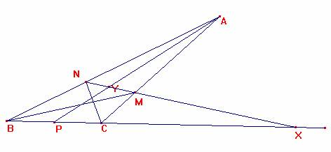

De investigación
Propuesto por Ricard Peiró i Estruch Profesor de Matemáticas del IES 1 de Xest (València)
Problema 317
Siguen , ha hb hc, les tres altures del triangle ABC tals que ha=hb+hc.
La recta que passa pels peus de les bisectrius interiors dels angles B i C passa pel baricentre del triangle.
Oposicions d’Eivissa 2002.
Sean ha hb hc, las tres alturas del triángulo ABC tales que ha =hb+hc.
La recta que pasa por los pies de las bisectrices interiores de los ángulos B y C pasa por el baricentro del triángulo.
Oposiciones Ibiza 2002.
Solución de María Calvo Cervera, estudiante de primero de Matemáticas en Granada:

Se tiene que:
2S = a ha = b hb = c hc, se tiene , y por tanto la condición del enunciado queda
Consideremos ahora el triángulo ABC, donde M y N son los pies de las bisectrices correspondientes a los ángulos B y C respectivamente. Por el teorema de la bisectriz:
La recta que pasa por M y N corta a la recta BC en X y por el teorema de Menealo se tiene:
Esto último nos dice que X es el pie de la bisectriz externa del vértice A y por tanto se cumple:
Consideremos ahora el triángulo APB, siendo el P el punto medio de BC, y apliquemos el teorema de Menealo con los puntos X, M y Y, siendo el Y el punto de corte de la recta AB con MN. Se tiene:
Simplificando se llega a:
Como ab + ac = bc:
AY=2YP
Se tiene que la recta AP es la mediana y por tanto el punto Y es el baricentro.c.q.d.